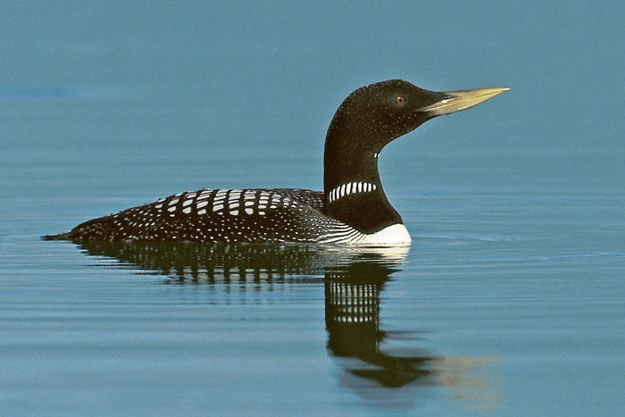

По фотографиям
Определите птицу по её изображению.

По звукам
Угадайте птицу по её пению.
Случайный режим
Комбинация фотографий и звуков.
Выберите режим викторины


Определите птицу по её изображению.
Угадайте птицу по её пению.
Комбинация фотографий и звуков.